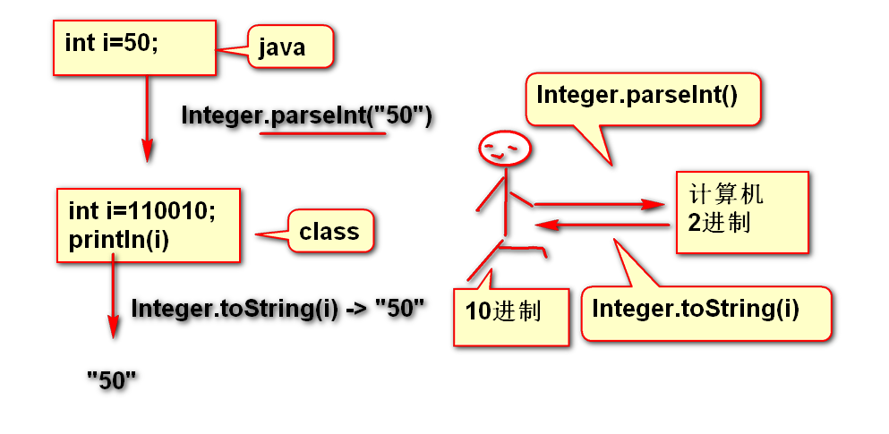
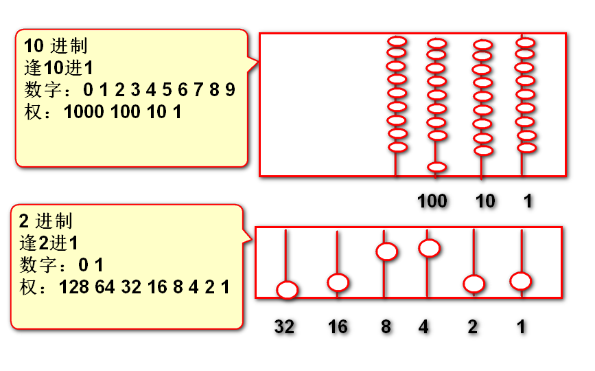
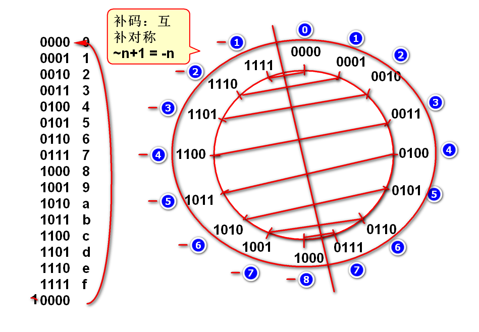
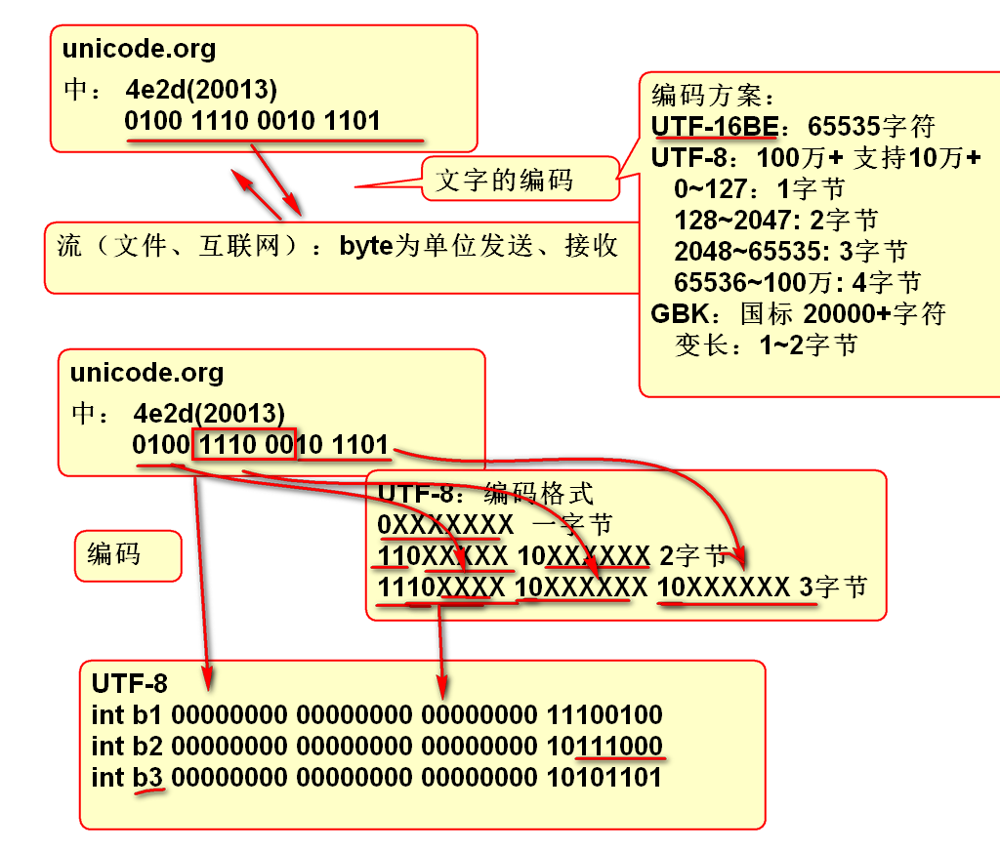

面试题目:
System.out.println(51 & 7);
如上代码的结果是(__3__)
答案：
00000000 00000000 00000000 00110011
00000000 00000000 00000000 00000111
案例：
int i = 50;
System.out.println(Integer.toBinaryString(i));

逢2进1的计数规则：

2进制书写十分不方便：
00100111 10100010 10111111 01011101
利用16进制缩写（简写）2进制，目的就是方便书写
4位数补码：

经典题目：
int i = 0xffffffff;
System.out.println(i);
选择如上代码输出结果（ ）
A.2147483647 B.-2147483648 C.2147483648 D.-1
> 答案： D
经典题目：
int i = 8;
System.out.println(~i+1);
如上代码输出结果（ ）
A.8 B.-8 C.9 D.-9
> 答案: B
int i = -8;
System.out.println(~i+1);
如上代码输出结果（ ）
A.8 B.-8 C.9 D.-9
> 答案: A
int i = -8;
System.out.println(~i);
如上代码输出结果（ ）
A.8 B.-8 C.9 D.-9 E.7
> 答案: E
~ 取反 & 与运算 | 或运算 >>> 逻辑右移位 >> 数学右移位 <<左移位
案例：
将一个中文字拆分为UTF-8编码的字节。

运算规则：
0 & 0 = 0
0 & 1 = 0
1 & 0 = 0
1 & 1 = 1
案例：
n = 00000000 00000000 01001110 00101101
m = 00000000 00000000 00000000 00111111
k = n&m 00000000 00000000 00000000 00101101
//如上运算的结果： k是n的后6位数！
int n = 0x4e2d;
int m = 0x3f;
int k = n&m;
//2进制输出
基本运算规则：
0 | 0 = 0
1 | 0 = 1
0 | 1 = 1
1 | 1 = 1
案例：
int k = 00000000 00000000 00000000 00110101
int n = 00000000 00000000 00000000 10000000
int m = k|n 00000000 00000000 00000000 10110101
代码：
int k = 0x35;
int n = 0x80;
int m = k|n;
//验证结果：按照2进制输出
>>> 逻辑右移位规则：
2进制数字整体向右移动，高位补0
案例:
n = 00000000 00000000 00000000 10101101
m = n>>>1 000000000 00000000 00000000 1010110
k = n>>>2 0000000000 00000000 00000000 101011
代码：
int n = 0xad;
int m = n>>>1;
int k = n>>>2;
//按照2进制输出。
复习
n = 1302332.
m = 13023320. m 是 n的10倍
k = 130233200. k 是 n的100倍
如果看做小数点不动，则数字向左移动
2进制时候，规律依然存在： 数字向左移动一次，扩大2倍
n = 00000000 00000000 00000000 00110010. 50
m =n<<1 0000000 00000000 00000000 001100100. 100
k =n<<2 000000 00000000 00000000 0011001000. 200
案例：
int n = 50;
int m = n<<1;
int k = n<<2;
//int t = n<<(65%32);
//输出n，m，k的十进制和2进制
经典
优化计算 n*8
答：（ n<<3 ）
数学右移位：满足数学规律（小方向取整）正数高位补0，负数高位补1，保持符号不变。
逻辑右移位：无论正负高位都补0
案例：
n = 11111111 11111111 11111111 11001101 -51
m=n>>1 111111111 11111111 11111111 1100110 -26
k=n>>2 1111111111 11111111 11111111 110011 -13
x=n>>>1 011111111 11111111 11111111 1100110 发生符号反转